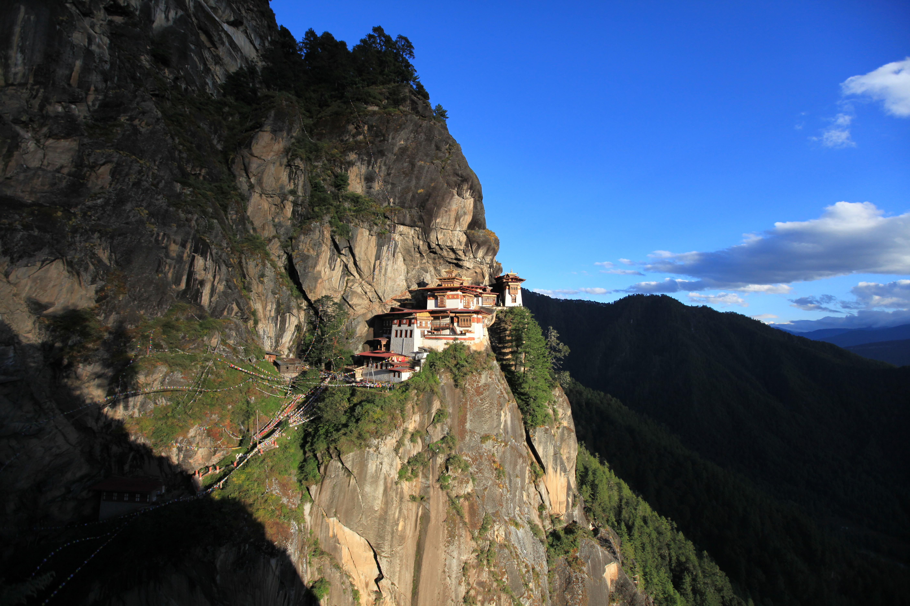

© gomoadventures.com
In Search of Happiness
Trip Overview
Bhutan Spiritual & Culture Tour
Bhutan, the only Himalayan kingdom that puts balance between spiritualism and materialism at the forefront, invites you to join a small group of travelers for a once-a-year opportunity. Our unique program allows you to engage with scholars, knowledgeable monks, and government policy makers, sharing their expertise on how to achieve balance between internal and external comforts. Explore the concept of Gross National Happiness and learn how to live a happy and content life through contemplation, pilgrimages, meditation, spectacular sightseeing, and hiking through peaceful nature.
This mindfully crafted tour will take you off the beaten path to visit holy places and enjoy time in rural communities and monasteries, all while experiencing firsthand the serenity and beauty of nature. Engage in meditation programs in high hills and temples, enjoy wellness prayers performed by Buddhist masters, and participate in cleansing ceremonies. Don’t miss this unique opportunity to explore the last stronghold of Vajrayana Buddhism and experience the true essence of happiness.

Trip Highlights
- Meditation in temples and monasteries throughout the journey
- A pilgrimage to sacred places blessed by many bodhisattvas over the centuries
- Meditation and teaching lessons from the masters, and hiking in the pristine Himalayan Kingdom of Bhutan
- Praying together with monks and nuns, and offering food and butter lamps
- Conversations with locals and policy makers on Bhutan’s Gross National Happiness (GNH)
- Authentic culture and local cuisine, and many more
Itinerary
Day 1 Paro
Arrive in Paro and visit Paro Dzong for a welcome blessing. Visit Drakarpo, the temple of 1,000 dakinis, for a blessing. In the evening, drive to Thimphu.
Day 2 Thimphu
In the morning, visit the tallest Buddha, then drive to Dodena and hike to the Chari meditation center to meditate in the holy temple at Chari. Picnic lunch by the river. In the evening, visit Tango university for Buddhist teaching and conversation, followed by evening prayer and dinner with the monks.
Day 3 Punakha
Drive to Punakha via Simtokha Dzong and Dochula for prayer and blessings. Lunch, relaxation and yoga at Lampelri Botanical Garden. Drive down to Punakha and hike in the village. Evening prayer at the nunnery.
Day 4 Punakha
Drive to Talo and visit Talo Monastery for a blessing and meditation, followed by Nalanda Monastery for another blessing and time with the monks for more clarification — and stunning views, as most of the monasteries are built on hilltops.
Day 5 Gasa
Drive to Goen Tshephu for pilgrimage and meditation; it is said that the Second Buddha meditated here and gained the power of longevity. In the afternoon, drive to Gasa.
Day 6 Gasa
Gasa hot spring, a meditation hike to Gasa Dzong and an authentic village stay, and many more.
Day 7 Wangdue
Drive to Wangdue, stay at Kichu Resort and visit Wangdue Phodrang Dzong.
Day 8 Wangdue
Drive to Byelandra Nye for more blessings, to get to know the area and yourself, and return to Kichu Resort.
Day 9 Wangdue
Drive to Khotokha and visit Khotokha Rinchen Ling Monastery and the holy temples around it. In the evening, return to Kichu Resort.
Day 10 Bumthang
Drive to Bumthang via Trongsa, visiting Trongsa Dzong, with lunch at the Waterfall Cafe. Evening prayer at Jambay Lhakhang, built in the 7th century, where Buddhist masters have meditated for centuries.
Day 11 Bumthang
Visit Kurjey Lhakhang, Kenchosum, Tamshing and many more for blessings, meditation, yoga and more. Stay at the Swiss Guest House for delicious meals.
Day 12 Bumthang
Drive to Tang Ugyen Choling via the Burning Lake and Tang Rimochen, the tiger’s-stripe cliff temple. Ugyen Choling is one of the great places of Longchen teaching.
Day 13 Phobjikha
Drive back to Phobjikha, visit Gangtey Monastery and hike in the Phobjikha valley.
Day 14 Paro
Drive back to Paro and visit Dzongdrakha, one of the most secret and oldest temples in the Paro area.
Day 15 Paro
In the morning, visit Kichu Lhakhang, another of the oldest temples built in Bhutan (7th century). After that, hike to Tiger’s Nest Monastery for more blessings and meditation. Farewell dinner in the evening.
Day 16 Departure
Departure to Bangkok, Delhi, Dhaka, Kathmandu or Singapore.